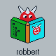

September, 2005
Minimized Drop
When JALcc is minimized, a small transparent floating icon will remain on the screen. On this icon you can drop information: files, URLs, shortcuts and contents This information will be stored in an organized way in JALcc. Contents is copied into a specific document, other drop sources are stored as links.
The icon is always on top, and it can be placed anywhere on the screen, by simply dragging it.
Double-clicking on the icon, or clicking on the close button, will hide the drop-icon and show the normal JALcc window again.
At the bottom of the icon, the filename of the settings-file is shown, so it's possible to have more than 1 JALcc active and still have full control over where the information is dropped.
The place on the icon, determines where the information is stored.
The drop position is indicated by a highlighted part of the book (and by the direction of the eyes of PuntHoofd).

This picture below, shows both the list and the current weekly document as the active document.
The list shows how the weeks 4,5, and 6 in 2004 are organized. The file-structure is identical, starting at the path of the inifile, that was used at startup of PuntHoofd.
The listitem "2004-6-doc1" is due to drop of content in the list, which creates a file "2004-6-doc1.html" that will contain the dropped content.
|
|
Dropping in the weekly list. For URL's, files and shortcuts, a link is placed as an item in the list. A ShortCut is fully parsed, so it's not a link to the shortcut itself, but a equivalent link to the target of the shortcut, including the parameters of the shortcut. (Currently not implemented: If contents is dropped, a new document is created as child of the current weekly listitem and the content is dropped in the new document.) |
|
|
Dropping in the general drop document. (In PuntHoofd this was dropping in the currently active document. Because now JALcc supports a lot more document types, where a lot doesn't accept dropping, this drop location is changed th the general drop file.) URL's, files and shortcuts, are inserted as a link (at the bottom) in the weekly document. Content is inserted as content in the weekly document. |
|
|
Dropping in the weekly document. URL's, files and shortcuts, are inserted as a link (at the bottom) in the weekly document. Content is inserted as content in the weekly document. |
Transparancy can be set, by Right Mouse button, which will popup the next form.
Transparency is only available in win2000, winXP (maybe winNT).